Every street of Leonida.
Mapped by the people who play it.
A community atlas from the city lights down to the island chain, with official news that links its sources and every trailer in one place.
Made by fans. Open to everyone.
- 6 regions
- 15 official images
- 4 official trailers
Official facts link to Rockstar Games. The map is a credited community reconstruction.
Scroll to explore
Vice City
City · east coast
Community reconstruction, not an official map. YANIS V17 / GTA VI Mapping Community; GTADB.org & contributors · CC BY 4.0. Stitched, cropped & re-encoded by Neonshore; pins approximate. Full map with original credits ↗
Based on Rockstar trailers & screenshots: © Rockstar Games, used for fan commentary
GTA VI launches in
19 Nov 2026 · 00:00 ETOut now. Unlocked at 00:00 ET on 19 Nov 2026 in the US.
US launch in your time: —
Counting to 00:00 ET on 19 Nov 2026, the US release (Rockstar: midnight local time). Other regions unlock at their own midnight.
One state, six moods.
Open the atlas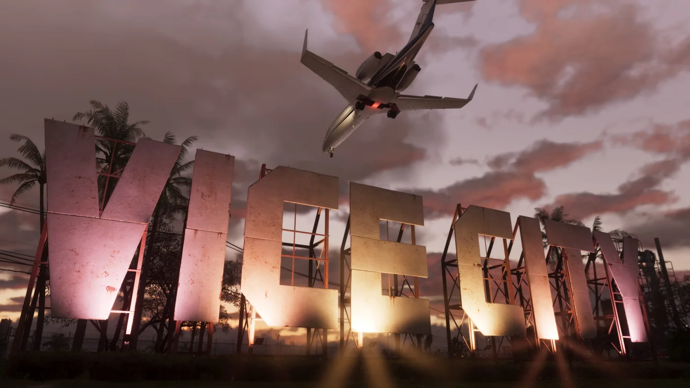
© Rockstar Games, used for fan commentary CityVice City
Pastel towers, packed beaches and a nightlife that never clocks out.
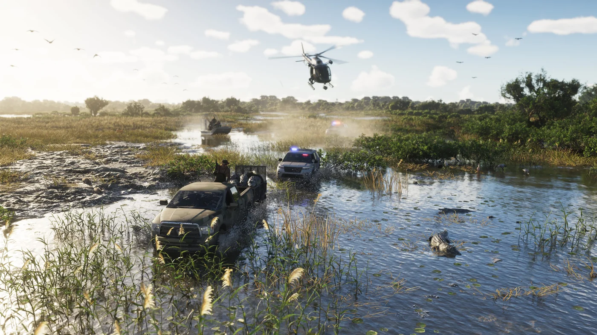
© Rockstar Games, used for fan commentary WetlandsGrassrivers
Airboats, sawgrass and things that move under the water.
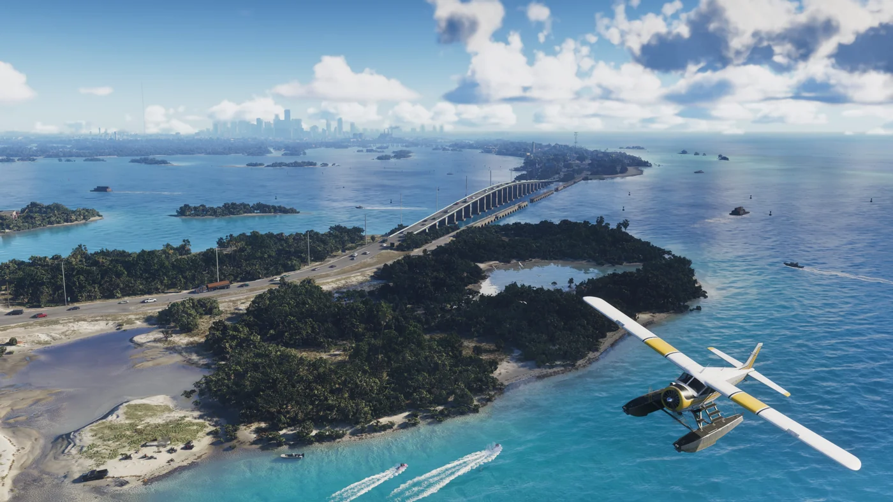
© Rockstar Games, used for fan commentary IslandsLeonida Keys
A string of bridges, bait shops and sunsets at the end of the road.
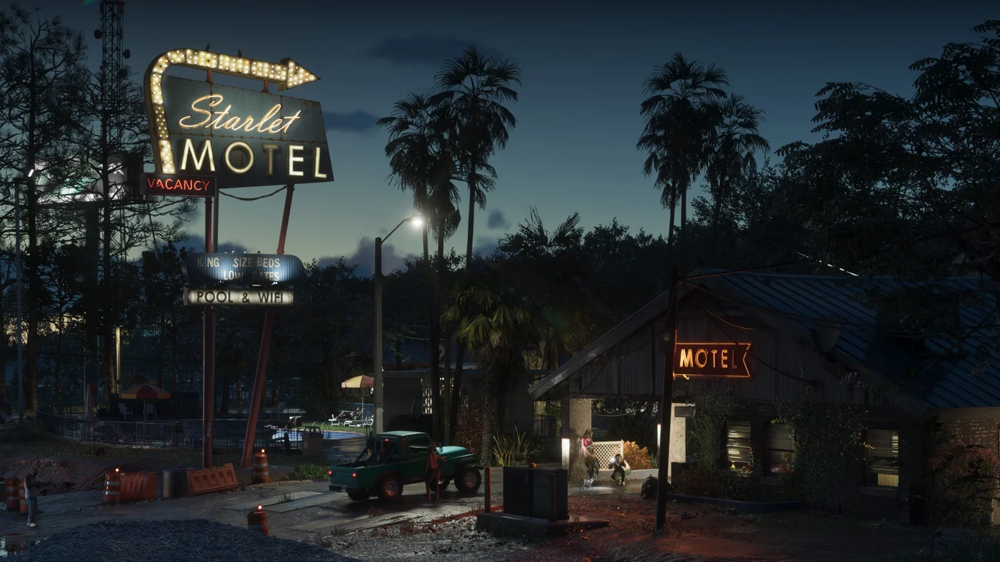
© Rockstar Games, used for fan commentary Port cityPort Gellhorn
Faded motels and a boardwalk that has seen better summers.
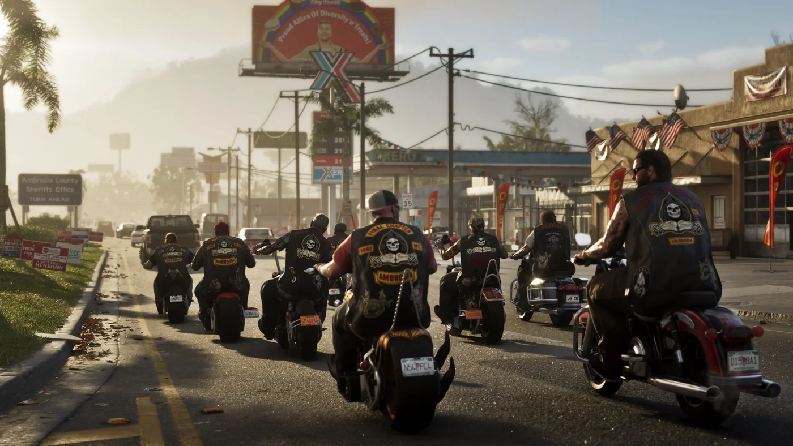
© Rockstar Games, used for fan commentary Industrial townAmbrosia
Smokestacks, long highways and a small town that works for a living.
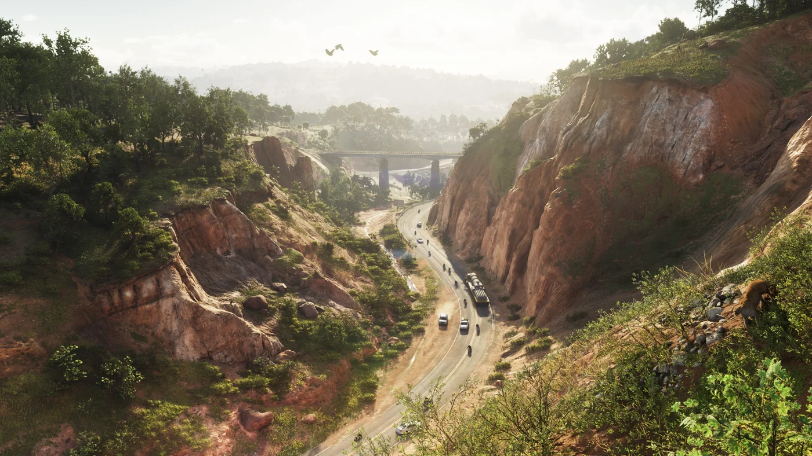
© Rockstar Games, used for fan commentary National parkKalaga National Park
Trails, lookout points and plenty of places to go off grid.
Region names are as announced by Rockstar Games. Region screenshots were downloaded from the official GTA VI media library; card descriptions are original fan commentary.
Go to the source
Official Rockstar pages, opened in a new tab.
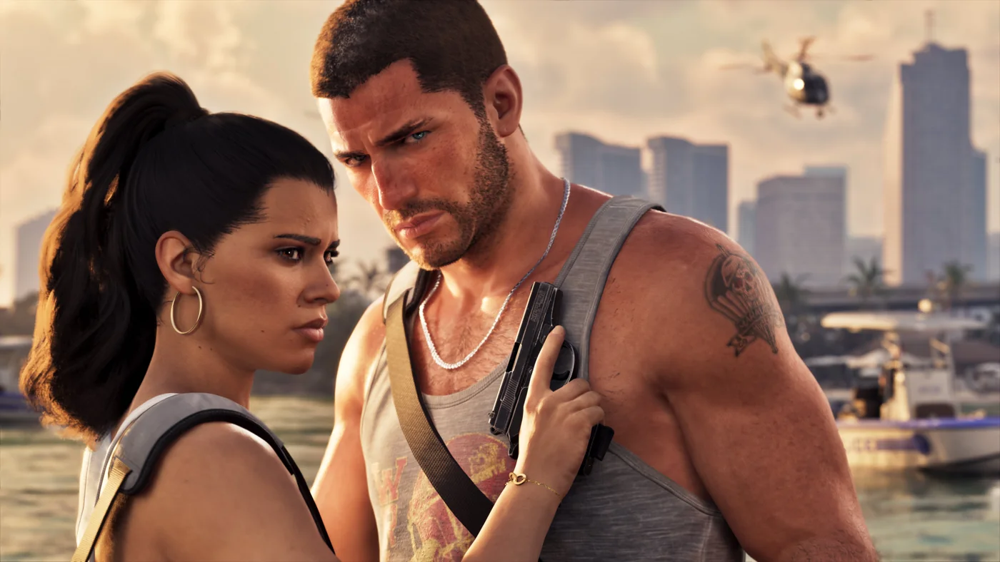
© Rockstar Games, used for fan commentary 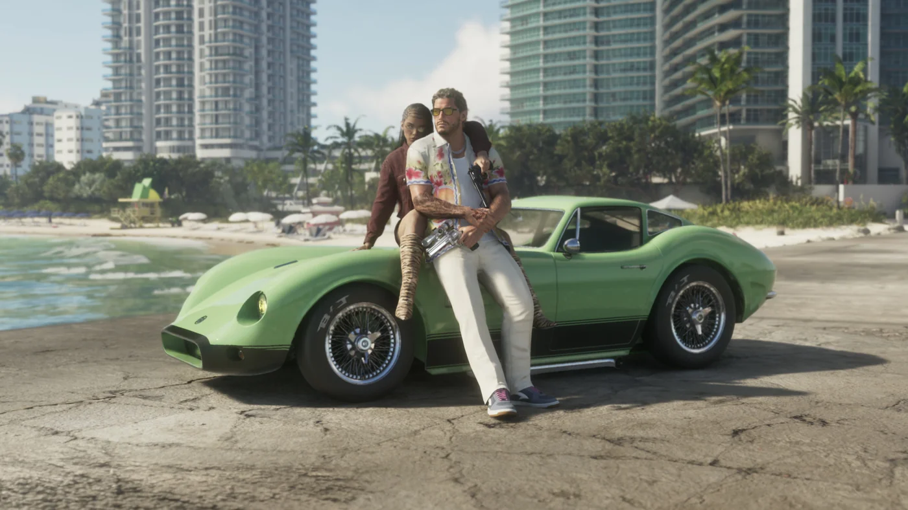
© Rockstar Games, used for fan commentary 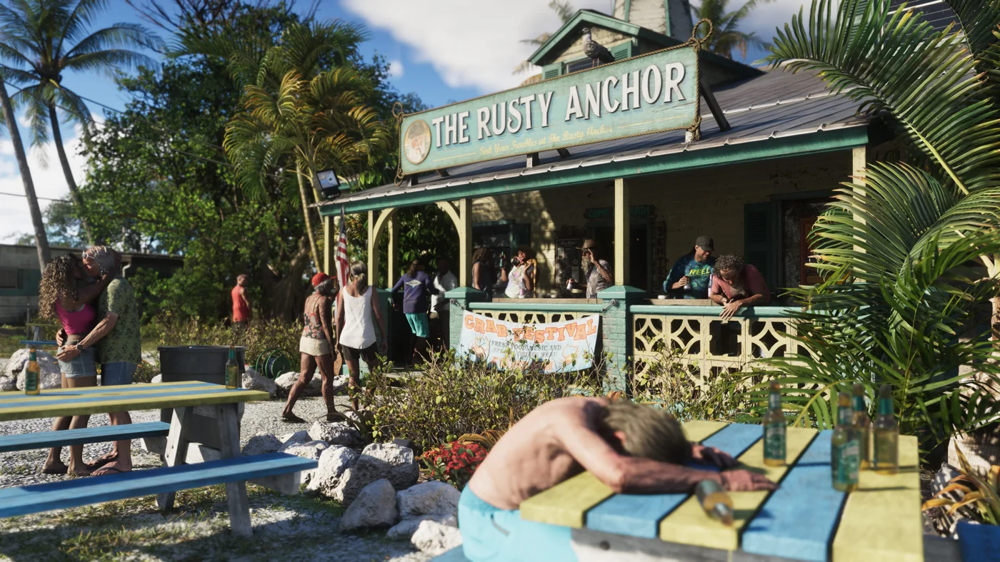
© Rockstar Games, used for fan commentary 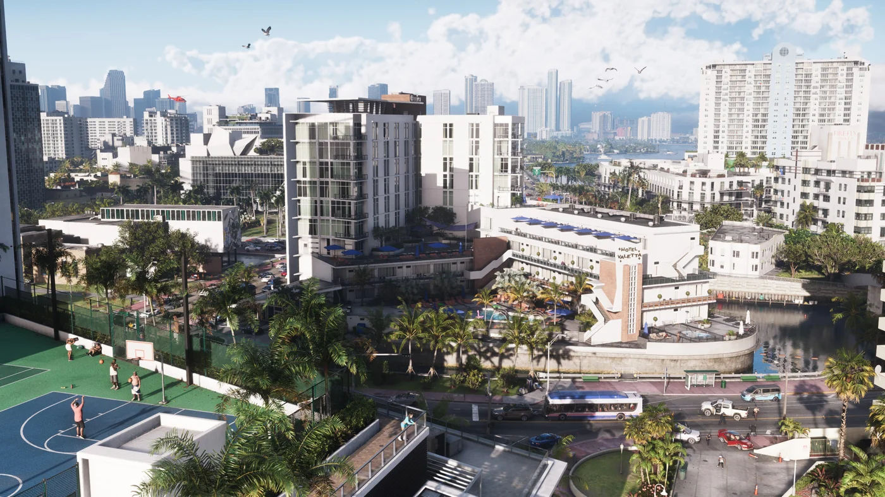
© Rockstar Games, used for fan commentary
News with receipts
Confirmed, not rumoured
Each update links to where it came from. Leaks and speculation stay out of this feed.
All news on Rockstar Newswire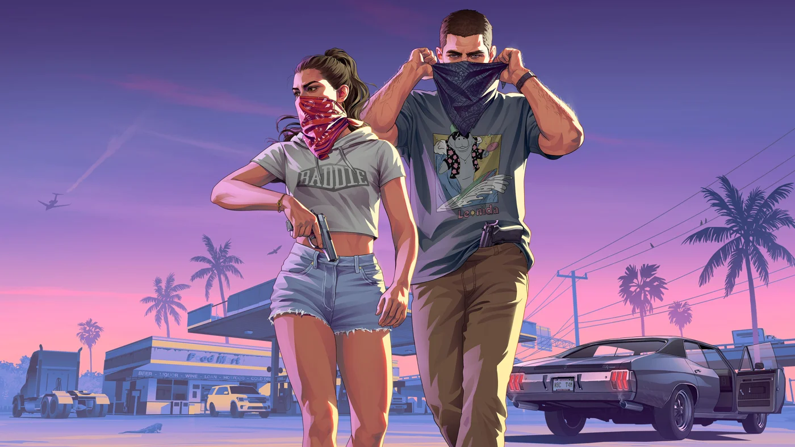
Pre-load Grand Theft Auto VI now
Pre-loading opened for everyone who pre-ordered digitally; code-in-box owners can pre-load once their code arrives.
Source: Rockstar NewswireExplore the Grand Theft Auto VI launch gallery
Two weeks out, Rockstar published a new set of screenshots of Vice City and beyond on the official site.
Source: Rockstar NewswireGrand Theft Auto VI pre-load begins on November 10
Rockstar set the pre-load date for PlayStation 5 and Xbox Series X|S ahead of the 19 November launch.
Source: Rockstar Newswire
Look closer
Official trailers
All official videosTrailer © Rockstar Games, used for fan commentary Trailer © Rockstar Games, used for fan commentary Rockstar Games
Grand Theft Auto VI Trailer 2
The second official trailer, released by Rockstar Games.
Watch on YouTubeVideo © Rockstar Games, used for fan commentary Rockstar Games
Grand Theft Auto VI: Pre-Load Now
Rockstar’s video announcing that pre-loading is open.
Watch on YouTubeTrailer © Rockstar Games, used for fan commentary
Videos play from YouTube’s privacy-enhanced domain (youtube-nocookie.com) only after you press play. Poster images are official Rockstar screenshots and a frame from the launch trailer.
Built by players
A guide without the sign-up
Neonshore has no accounts, no mailing list and no comments. Everything here is readable by anyone, and the map comes from an open community project.
About
Neonshore is an unofficial fan guide to GTA VI. It is not affiliated with Rockstar Games or Take-Two Interactive. The logo and editorial text are original; facts link to their official source.
Sources & credits
GTA VI imagery © Rockstar Games, from the official media library, used for fan commentary. Community map: YANIS V17 / GTA VI Mapping Community, GTADB.org & contributors, CC BY 4.0.
Full source listPrivacy
This site collects nothing: no accounts, forms, cookies or analytics. Fonts load from Google Fonts. Trailers load from youtube-nocookie.com only when you press play.